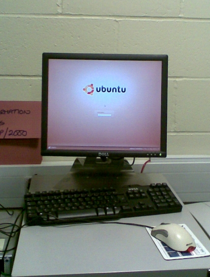
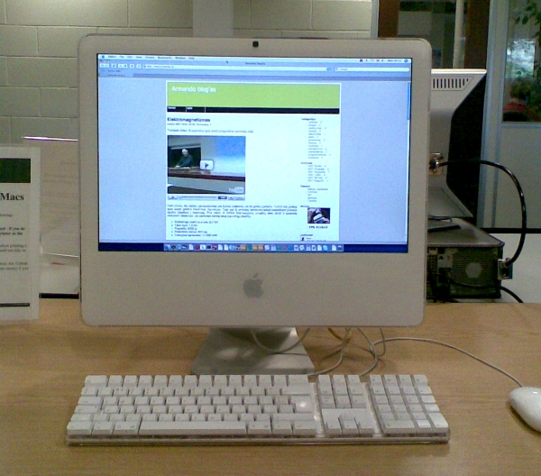
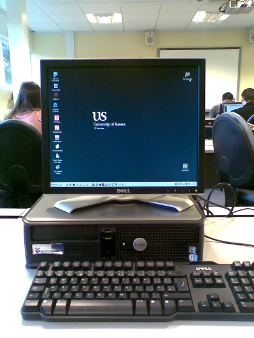

Įrašyta 2009-09-02, 11:30 | 6 Komentarai
Kartais naktį mėgstu palunaikuoti. Na iš tikro tai čia nėra taip žiauru, tiesiog jei prabudęs neteisingai suprantu kokią nors informaciją (pvz. laikas rodomas mobiliojo ekrane :) ir imuosi veiksmų, gaunasi šiek tiek juokinga situacija. Šį kartą vėlgi kaltinu pastaruoju metu susikaupusias neigiamas emocijas.
Taip išėjo, kad šįryt 5 valandą pusnuogis užsitrenkiau laiptinėje (neklauskit! :D). Vienintelis kelias atgal - pro vonios kambario langą. Jau atsikraustęs nepasitikėjau tuo langu, taigi gavau progą atlikti saugumo auditą.
Langas gali būti vienoje iš trijų padėčių - užvertas, šiek tiek atvertas ir pilnai atvertas. Langas turi saugos mechanizmą, kuris turi neleisti pilnai atidaryti lango iš lauko pusės:

Apsižvalgęs radau tokį štai įrankį:

Jo pagalba apsaugą apėjau per pusę minutės ir beliko tik įlipti vidun.
Šiaip tai priešdėlis "be" čia visai netinka. Lipimas buvo sunkesnioji dalis. Nors langą atidariau pilnai, tačiau tarpas vistiek gavosi toks mažas, jog ir žmogus voras turėtų problemų per jį įsliuogti. Vagišiams tektų naudotis vaiko arba Mini-Me paslaugomis. Be triukšmo įsibrauti išvis neįmanoma.

Kaip ten bebūtų, po 5 minučių jau buvau viduje ir galėjau gultis į lovą. Ryte susitvarkiau ant palangės buvusius babakus, iš naujo pakabinau užuolaidas ir dabar mąstau ką galėčiau padaryti su tuo langu, jog kitą kartą užtrukčiau bent 10 minučių :D
Gairės: Miegas, Pastebėjimai
Įrašyta 2008-10-21, 12:20 | 0 Komentarų
Šiandien gavau popierius balsavimui antrame Seimo rinkimų ture. Shiny skundėsi, jog pirmo turo vokas buvo tokio paties dydžio kaip ir "Išorinis balsavimo paštu vokas". Šį kartą dar geriau:

Na bent jau užsiklijuoja normaliai šį kartą. Praeitą kartą teko naudot lipnią juostą :D
Gairės: Pastebėjimai, Rinkimai, UK
Įrašyta 2008-01-18, 14:05 | 10 Komentarų
Šiandien atsivertęs metro išvydau šokiruojantį straipsnį. Nors ir nesu kažkoks bažnyčios atstovas ir šiaip už mokslą pasisakau, bet šito jau per daug. Na ir kas, kad (kol kas) embrionai gyvens tik 14 dienų, paskui sumąstys ir naują chimerų rasę išvesti. Tai, kas iki šiol buvo science-fiction, greitu metu gali tapti tik science. Baugu.
Gairės: Pastebėjimai, UK
Įrašyta 2007-12-22, 22:33 | 6 Komentarai
Vakar turėjau ganėtinai stresinę dieną, jau nuėjęs gulti varčiausi apie valandą lovoj, nes į galva lindo negeros mintys. Pagalvojau "nu blie, 6 valandas tepamiegosiu, dar neaišku kokios ir tos bus". Šiaip taip užmigau.
Prabundu, pasižiūriu į telefoną - 7:39. Darbe turiu būt 7! Greitai atsikeliu, maudamasis kojinę pagalvoju, kad neprisimenu, jog būčiau girdėjęs kaip skambėjo žadintuvas. Apriprausiu, nubėgu į virtuvę, pasiemu drabužius iš džiovyklos, susimetu viską į kuprinę ir ruošiuos eiti. Išėjęs į lauką, nustembu - neįprastai šilta. Paeinu kokį 50 metrų, pasižiūriu į telefoną: 7:56. Einu toliau. Už kelių žingsnių sustoju, išsitraukiu mobilų: 1:57. Mintyse WTF?
Apsisuku. Lėtai einu namo.
Gairės: Gyvenimas, Miegas, Pastebėjimai
Įrašyta 2007-11-12, 17:14 | 2 Komentarai
Šiandien įėjus į mano mėgstamiausią pc cluster'į, nustebino vilčių teikiantis vaizdas:

Iškart pasiteiravau ar galiu nufotkinti :D ir paklausiau ar suvairuos tokių kompų studentam. Deja. Nufotkinti leido, bet sakė, kad Ubuntu bus tik tame kompe, nes yra studentų naudojančių Linux, tai jiems reikia pasižaisti, kad galėtų suteikti visapusiškesnį supportą :).
Gaila, nes manau, kad dėl Ubuntu būčiau pasiryžęs palikti dabartinius savo draugus - Mac'us:

Na, o kad negalvotumėt, jog viskas idealu, paminėsiu, jog dauguma kompų univiere vis dėl to atrodo taip:

Gairės: Apple, Geek, Pastebėjimai, Ubuntu, Univieras